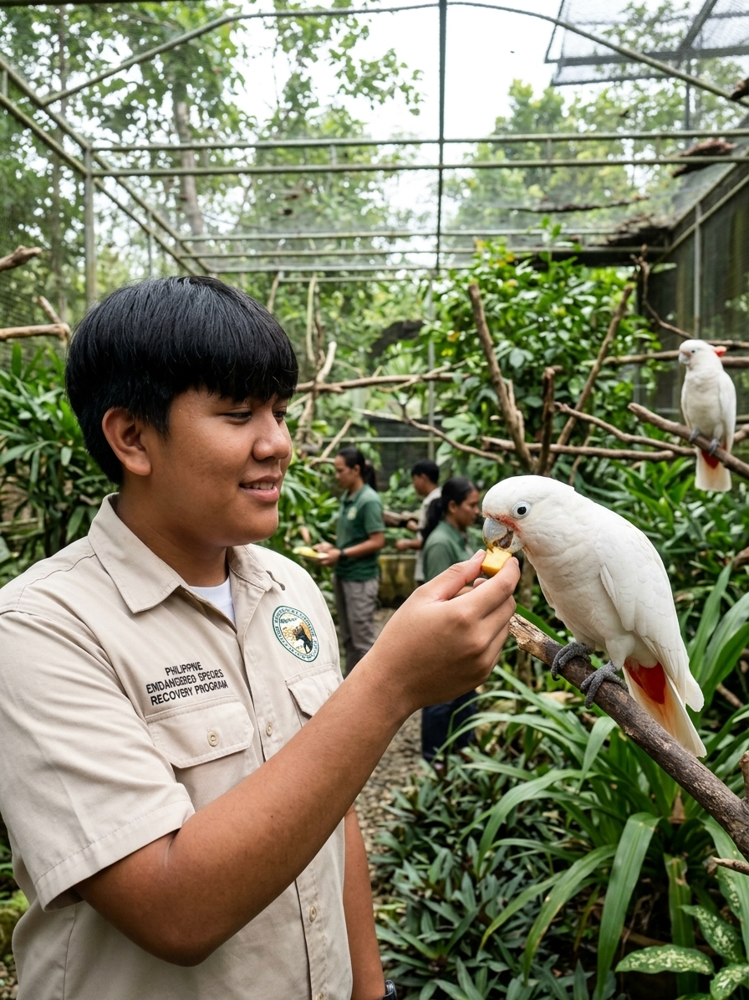

Saving a species starts with protecting its home.

Wildlife protection is not a photo opportunity.
This highlight represents the careful work of people who help wildlife while following proper conservation and rehabilitation practices.
Endangered animals are not simply a collection of rare photographs. Their survival depends on forests, wetlands, islands, food sources, breeding areas, and the people and institutions protecting those places.
The Philippine examples below are presented as a learning list rather than individual pages. The information is based on the data and research gathered for this project and is intended to help readers understand the animals, their habitats, and the threats they face. For careful verification and deeper reading, consult the current sources listed below.
Several threats appear repeatedly: habitat loss and degradation, hunting, illegal wildlife collection or trade, and human disturbance. Protecting a species therefore means addressing the causes of decline as well as caring for individual animals.
Research & reliable sources
The information in this feature is based on the data and research gathered for this project. To verify conservation status, wildlife classifications, and current assessments carefully, readers are encouraged to explore reliable primary and specialist sources.
- Department of Environment and Natural Resources (DENR) — Philippine environmental and wildlife information.
- DENR Biodiversity Management Bureau (BMB) — biodiversity and threatened-wildlife programs, lists, and conservation information.
- IUCN Red List of Threatened Species — international species assessments and conservation-status information.
.jpeg)
.jpeg)
.jpeg)
.jpeg)
.jpeg)
.jpeg)
.jpeg)
.jpeg)
.jpeg)